1과목: 건축계획
1. 극장의 평면형식에 관한 설명으로 옳지 않은 것은?
2. 주택의 평면과 각 부위의 치수 및 기준척도에 관한 설명으로 옳지 않은 것은?
3. 종합병원의 외래진료부를 클로즈드 시스템(closed system)으로 계획할 경우 고려할 사항으로 가장 부적절한 것은?
4. 공장의 지붕형태에 관한 설명으로 옳은 것은?
5. 레드번(Radburn) 주택단지계획에 관한 설명으로 옳지 않은 것은?
6. 공포형식 중 다포형식에 관한 설명으로 옳지 않은 것은?
7. 탑상형 공동주택에 관한 설명으로 옳지 않은 것은?
8. 학교의 운영방식에 관한 설명으로 옳지 않은 것은?
9. 사무소 건축에서 오피스 랜드스케이핑(office landscaping)에 관한 설명으로 옳지 않은 것은?
10. 엘리베이터의 설계 시 고려사항으로 옳지 않은 것은?
11. 극장 건축과 관련된 용어 설명으로 옳지 않은 것은?
12. 숑바르 드 로브의 주거면적으로 옳은 것은?
13. 미술관 전시실의 순회형식에 관한 설명으로 옳지 않은 것은?
14. 경복궁의 궁궐 배치는 전조공간과 후침공간으로 이루어져 있다. 다음 중 전조공간의 구성에 속하지 않는 것은?
15. 도서관 건축에 관한 설명으로 옳지 않은 것은?
16. 호텔건축에 관한 설명을 옳지 않은 것은?
17. 공동주택 단위주거의 단면구성 형태에 관한 설명으로 옳지 않은 것은?
18. 다음 중 건축요소와 해당 건축요소가 사용된 건축양식의 연결이 옳지 않은 것은?
19. 은행건축계획에 관한 설명으로 옳지 않은 것은?
20. 다음 중 백화점 기둥간격의 결정요소와 가장 거리가 먼 것은?
2과목: 건축시공
21. 아래 그림의 형태를 가진 흙막이의 명칭은?
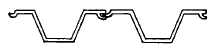
22. 다음 중 통계적 품질관리 기법의 종류에 해당되지 않는 것은?
23. 도장공사에 필요한 가연성 도료를 보관하는 창고에 관한 설명으로 옳지 않은 것은?
24. 철근콘크리트 구조물에서 철근 조립순서로 옳은 것은?
25. 건설사업자원 통합 전산망으로 건설 생산활동 전 과정에서 건설 관련 주체가 전산망을 통해 신속히 교환·공유할 수 있도록 지원하는 통합 정보시스템을 지칭하는 용어는?
26. 타일의 흡수율 크기의 대소관계로 옳은 것은?
27. MCX(Minimum Cost Expediting)기법에 의한 공기단축에서 아무리 비용을 투자해도 그 이상 공기를 단축할 수 없는 한계점을 무엇이라 하는가?
28. 콘크리트에 사용되는 혼화재 중 플라이애시의 사용에 따른 이점으로 볼 수 없는 것은?
29. 다음 중 공사시방서에 기재하지 않아도 되는 사항은?
30. 방수공사용 아스팔트의 종류 중 표준용융온도가 가장 낮은 것은?
31. 외부 조적벽의 방습, 방열, 방한, 방서 등을 위해서 설치하는 쌓기법은?
32. 칠공사에 사용되는 희석제의 분류가 잘못 연결된 것은?
33. 토공사에 쓰이는 굴착용 기계 중 기계가 서있는 지반면보다 위에 있는 흙의 굴착에 적합한 장비는?
34. 바깥방수와 비교한 안방수의 특징에 관한 설명으로 옳지 않은 것은?
35. 한중콘크리트에 관한 설명으로 옳은 것은?
36. 네트워크(Network) 공정표의 장점으로 볼 수 없는 것은?
37. 일반 콘크리트의 내구성에 관한 설명으로 옳지 않은 것은?
38. 철근콘크리트 공사에서 철근조립에 관한 설명으로 옳지 않은 것은?
39. 다음 중 유리의 주성분으로 옳은 것은?
40. 8개월간 공사하는 현장에 필요한 시멘트량이 2397포이다. 이 공사 현장에 필요한 시멘트 창고 필요면적으로 적당한 것은? (단, 쌓기단수는 13단)
3과목: 건축구조
41. 다음 중 지진에 의하여 발생되는 현상이 아닌 것은?
42. 철근콘크리트 보의 사인장 균열에 관한 설명으로 옳지 않은 것은?
43. 다음 그림과 같은 띠철근 기둥의 설계축하중(øPn)값으로 옳은 것은? (단, fck=24MPa, fy=400Mpa, 주근 단면적(Ast) : 3000mm2)
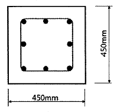
44. 연약한 지반에 대한 대책 중 상부구조의 조치사항으로 옳지 않은 것은?
45. 그림과 같은 단면에서 x축에 대한 단면2차모멘트는?
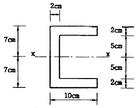
46. 철골조의 가새에 관한 설명으로 옳지 않은 것은?
47. 절점 B에 외력 M=200kN·m가 작용하고 각 부재의 강비가 그림과 같을 경우 MAB는?
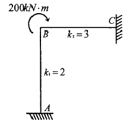
48. 그림과 같은 모살용접의 유효용접길이는? (단, 유효용접길이는 1면에 대해서만 산정)
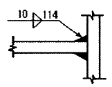
49. 강구조에서 하중점과 볼트, 접합된 부재의 반력사이에서 지렛대와 같은 거동에 의해 볼트에 작용하는 인장력이 증폭되는 현상을 무엇이라 하는가?
50. 다음 그림과 같은 보에서 고정단에 생기는 휨모멘트는?
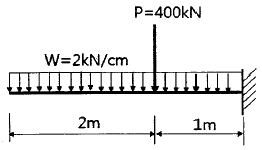
51. 다음 그림과 같은 구조물의 부정정차수로 옳은 것은?
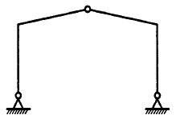
52. 다음과 같은 볼트군의 xo부터의 도심위치 x를 구하면? (단, 그림의 단위는 mm)
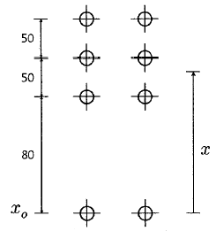
53. 압축이형철근의 정착길이에 관한 기준으로 옳지 않은 것은?
54. 다음 그림과 같은 압축재 H-200×200×8×12가 부재의 중앙지점에서 약축에 대해 휨변형이 구속되어 있다. 이 부재의 탄성좌굴응력도를 구하면? (단, 단면적 A=63.53×102mm2, Ix = 4.72×107mm4, Iy = 1.60×107mm4, E = 2⑤000MPa)
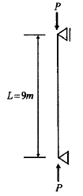
55. 철근콘크리트 보에서 콘크리트를 이어붓기 할 때 그 이음의 위치로 가장 적당한 것은?
56. 그림과 같이 양단이 고정된 강재 부재에 온도가 △T=30℃ 증가될 때 이 부재에 발생되는 압축응력은 얼마인가? (단, 강재의 탄성계수 Es=2.0×105MPa, 부재단면적은 5000mm2, 선팽창 계수 α=1.2×10-5/℃이다.)
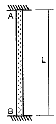
57. 철근콘크리트 보의 장기처짐을 구할 때 적용되는 5년 이상 지속하중에 대한 시간경과계수 ξ의 값은?
58. 강도설계법에서 휨 또는 휨과 축력을 동시에 받는 부재의 콘크리트 압축연당네서 극한변형률은 얼마로 가정하는가?
59. 그림과 같은 캔딜레버 보에서 B점의 처짐을 구하면?
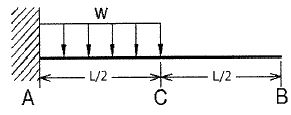
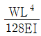
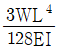
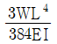
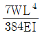
60. 그림과 같은 구조물에서 기둥에 발생하는 휨모멘트가 0이 되려면 등분포하중 w는?
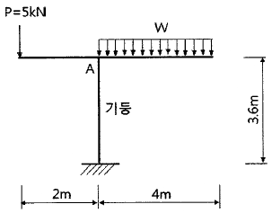
4과목: 건축설비
61. 자동화재탐지설비의 감지기 중 감지기 주위의 온도가 일정한 온도 이상이 되었을 때 작동하는 것은?
62. 급탕설비에 관한 설명으로 옳은 것은?
63. 난방방식에 관한 설명으로 옳지 않은 것은?
64. 알칼리 축전지에 관한 설명으로 옳지 않은 것은?
65. 덕트 설비에 관한 설명으로 옳은 것은?
66. 사무소 건물에서 다음과 같이 위생기구를 배치하였을 때 이들 위생기구 전체로부터 배수를 받아들이는 배수수평지관의 관경으로 가장 알맞은 것은?
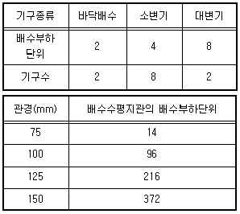
67. 다음 중 건물 실내에 표면결로 현상이 발생하는 원인과 가장 거리가 먼 것은?
68. 양수량이 1m3/min, 전양정이 50m인 펌프에서 회전수를 1.2배 증가시켰을 때 양수량은?
69. 높이 30m의 고가수조에 매분 1m3의 물을 보내려고 할 때 필요한 펌프의 축동력은? (단, 마찰손실수두 6m, 흡입양정 1.5m, 펌프효율 50%인 경우)
70. 전기설비가 어느 정도 유효하게 사용되는가를 나타내며, 최대수용전력에 대한 부하의 평균전력의 비로 표현되는 것은?
71. 각 층마다 옥내소화전이 3개씩 설치되어 있는 건물에서 옥내소화전설비의 수원의 저수량은 최소 얼마 이상이 되도록 하여야 하는가?(2021년 04월 01일 개정된 기준 적용됨)
72. 통기방식에 관한 설명으로 옳지 않은 것은?
73. 습공기를 가열하였을 경우 상태량이 변하지 않는 것은?
74. 어느 점광원에서 1[m] 떨어진 곳의 직각면 조도가 200[lx]일 때, 이 광원에서 2[m] 떨어진 곳의 직각면 조도는?
75. 공기조화방식 중 전수방식에 관한 설명으로 옳지 않은 것은?
76. 터보 냉동기에 관한 설명으로 옳지 않은 것은?
77. 가스배관 경로 선정 시 주의하여야 할 사항으로 옳지 않은 것은?
78. 다음과 같은 특징을 갖는 배선 방법은?
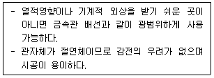
79. 엘리베이터의 일주시간 구성 요소에 속하지 않는 것은?
80. 다음과 같은 조건에 있는 실의 틈새바람에 의한 현열 부하량은?
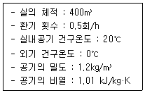
5과목: 건축법규
81. 지구단위계획구역의 지정목적을 이루기 위하여 지구단위계획에 포함될 수 있는 내용이 아닌 것은?
82. 시장·군수·구청장이 국토의 계획 및 이용에 관한 법률에 따른 도시지역에서 건축선을 따로 지정할 수 있는 최대 범위는?
83. 주차전용건축물이란 건축물의 연면적 중 주차장으로 사용되는 부분의 비율이 최소 얼마 이상인 건축물을 말하는가? (단, 주차장 외의 용도로 사용되는 부분이 자동차 관련 시설인 건축물의 경우)
84. 건축물의 면적, 높이 및 층수 등의 산정 방법에 관한 설명으로 옳은 것은?
85. 건축물을 건축하는 경우 해당 건축물의 설계자가 국토교통부령으로 정하는 구조기준 등에 따라 그 구조의 안전을 확인할 때, 건축구조기술사의 협력을 받아야 하는 대상 건축물 기준으로 틀린 것은?(문제 오류로 가답안 발표시 4번으로 발표되었지만 확정답안 발표시 모두 정답처리 되었습니다. 여기서는 가답안인 4번을 누르면 정답 처리 됩니다.)
86. 대형건축물의 건축허가 사전승인신청 시 제출도서 중 설계설명서에 표시하여야 할 사항에 속하지 않는 것은?
87. 비상용승강기의 승강장 및 승강로 구조에 관한 기준 내용으로 틀린 것은?
88. 국토의 계획 및 이용에 관한 법령상 다음과 같이 정의되는 용어는?
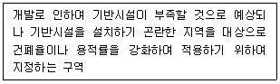
89. 다음 중 방화구조의 기준으로 틀린 것은?
90. 부설주차장의 설치대상 시설물 종류와 설치기준의 연결이 옳은 것은?
91. 다음은 건축법령상 지하층의 정의 내용이다. ( )안에 알맞은 것은?
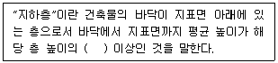
92. 오피스텔에 설치하는 복도의 유효너비는 최소 얼마 이상이어야 하는가? (단, 건축물의 연면적은 300제곱미터이며, 양옆에 거실이 있는 복도의 경우이다.)
93. 광역도시계획에 관한 내용으로 틀린 것은?
94. 다음 중 건축물의 용도 분류가 옳은 것은?
95. 다음 중 국토의 계획 및 이용에 관한 법령상 공공(公共)시설에 속하지 않는 것은?
96. 태양열을 주된 에너지원으로 이용하는 주택의 건축면적 산정 시 이용하는 중심선의 기준으로 옳은 것은?
97. 다음의 대지와 도로의 관계에 관한 기준 내용 중 ( ) 안에 알맞은 것은?
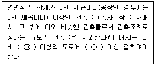
98. 다음 방화구획의 설치에 관한 기준을 적용하지 아니하거나 그 사용에 지장이 없는 범위에서 완하하여 적용할 수 있는 건축물의 부분에 해당되지 않는 것은?
99. 오피스텔의 난방설비를 개별난방방식으로 하는 경우에 관한 기준 내용으로 틀린 것은?
100. 주요구조부가 내화구조 또는 불연재료로 된 층수가 16층 이상인 공동주택의 경우, 피난층 외의 층에서는 피난층 또는 지상으로 통하는 직통 계단을 거실의 각 부분으로부터 계단에 이르는 보행 거리가 최대 얼마 이하가 되도록 설치하여야 하는가? (단, 계단은 거실로부터 가장 가까운 거리에 있는 1개소의 계단을 말한다.)